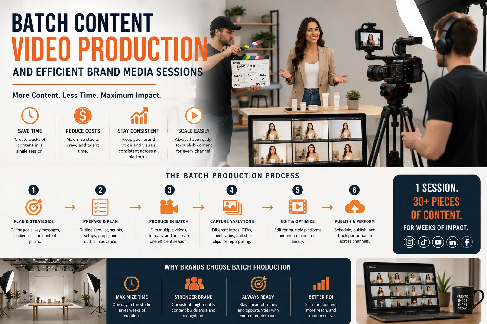
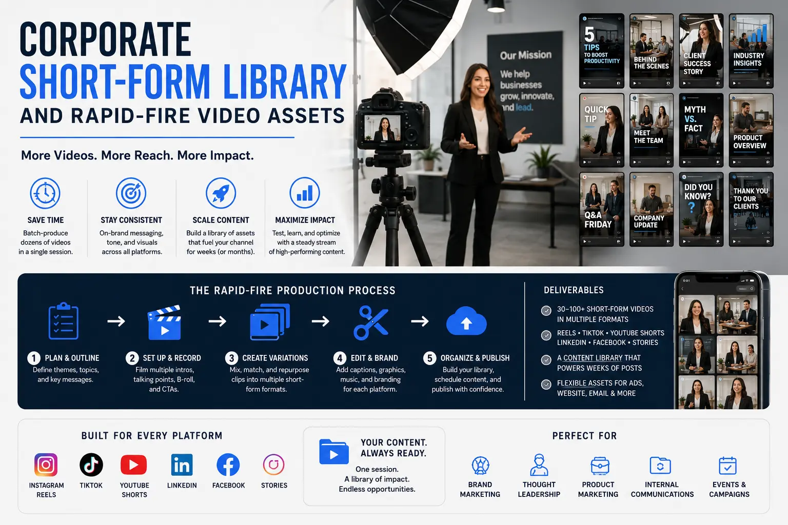

How Brands Can Batch-Produce 30 Days of Instagram Reels in a Single 6-Hour Studio Session
The Consistency Trap: The Cost of Ad-Hoc Content Production
Maintaining a consistent presence on social media platforms like Instagram, TikTok, and YouTube Shorts is essential to build audience trust and drive sales. However, setting up a camera, lighting, and audio gear for individual videos is incredibly inefficient. Ad-hoc content production burns creative energy, wastes crew hours, and often leads to gaps in your posting schedule.
To solve this, modern brands are moving away from daily filming and adopting **Batch Content Video Production** systems. By consolidating filming into structured blocks, companies can record a month's worth of short-form content in a single day, ensuring consistency while freeing up marketing teams.
Through high-volume **Short-Form Visual Asset Slicing** and structured **Efficient Brand Media Sessions**, businesses can build library resources that keep social feeds active with professional content.
The Preparation Phase: Scripting and Storyboarding at Scale
Successful batch shoots are won in pre-production. Without structured planning, filming sessions can quickly fall into delays.
- Organizing calendar media planning shoots. Before entering the studio, map out your monthly calendar. Create content buckets—such as tips, product demos, and client quotes—to ensure visual variety during your **calendar media planning shoots**.
- Structuring high-volume content creation scripts. Write short, focused scripts. Keep B2B or e-commerce tips to under 45 seconds, focusing on a single, clear message. Use bullet points rather than dense text to help the speaker present naturally.
- Maximizing camera team hours with template setups. To get the most from your session, keep camera positions fixed. By **maximizing camera team hours** and using pre-set lighting zones, you eliminate delays and allow the speaker to focus entirely on delivery.
- Working with a professional social media content creation agency. Working with a dedicated **social media content creation agency** helps streamline post-production. Editors handle raw files, apply text overlays, and format outputs, delivering social-ready assets.
Ensure Posting Consistency
Having 30 videos pre-shot and scheduled ensures your brand remains active online, even when your team is focused on daily operational tasks.
Maximize Studio Budgets
Consolidating shoots into one 6-hour session reduces studio rental fees and camera crew costs compared to booking multiple individual shoots.
Maintain Brand Quality
Recording in a controlled studio environment ensures consistent lighting, crisp audio, and professional framing across all social media assets.
Reduce Creative Fatigue
Scripting and recording in focused batches allows your team to get into a creative rhythm, delivering better on-camera presence and performance.

The Studio Session: Executing the 6-Hour Schedule
A structured timeline is essential to record 30 videos in a single 6-hour block.
- Hour 1: Set adjustments and test recordings. Use the first hour to set up lighting, adjust camera angles, and run audio checks. Record a quick test clip to verify everything is crisp.
- Hours 2–3: Segment 1 (15 videos). Record your first batch of videos. Keep the pacing steady, and have the speaker change wardrobe elements (e.g., shirts, jackets) every 4 to 5 clips to maintain visual variety.
- Hour 3.5: Quick break and set adjustments. Take a short break, adjust background details or camera angles slightly to change the look, and prepare for the next round of **rapid-fire video assets**.
- Hours 4–5: Segment 2 (15 videos). Record the remaining clips. Focus on maintaining energy levels, and use teleprompters to keep the delivery smooth and prevent retakes.
- Hour 6: Capturing secondary B-roll assets. Use the final hour to shoot B-roll footage. Capture close-ups, hand gestures, and laptop interactions to build assets for overlays and transitions.
Post-Production Slicing and Delivery Pipeline
Once raw files are recorded, apply a structured editing workflow to prepare the assets for distribution.
Video Slicing and Rough Cuts
- Import all raw takes and group them by calendar date.
- Apply clean jump cuts to remove gaps and keep the pacing tight.
- Build a **corporate short-form library** of raw and cut clips for future edits.
Text and Graphic Overlays
- Add bold, animated on-screen captions to keep viewers engaged.
- Use consistent brand colors, fonts, and styling across all video assets.
- Embed logo watermarks subtly in the corner of the frame.
Platform Formatting
- Export files in vertical 9:16 format optimized for Reels and Shorts.
- Sync transitions to trending audio beats to boost algorithmic reach.
- Deliver high-quality WebM or MP4 files ready for direct upload.
Scaling Short-Form Media Libraries
Use your B-roll and cut assets to build a long-term media repository.
- The evergreen catalog. Save evergreen tips and educational videos in an accessible folder, letting your team reshuffle and republish them in future calendars.
- Repurposing B-roll loops. Use your captured B-roll assets as background loops for static text posts, maximizing your studio investments.
- Consistent brand messaging. Maintain a unified brand voice by planning and reviewing scripts in batches before recording, ensuring all content aligns with your brand values.

Conclusion
Batch content production is an essential system for modern brands looking to stay consistent online. By using structured **Batch Content Video Production** systems to shoot multiple short-form assets in a single 6-hour session, brands can save time and budget.
Through disciplined pre-production, high-volume **Short-Form Visual Asset Slicing**, and coordinated post-production, you can build a consistent visual presence.
At The PhD Ads in Madurai, we organize high-volume **calendar media planning shoots**, design efficient studio workflows, and operate as a full-service **social media content creation agency** to help brands grow.
Key Topics
Build Your 30-Day Content Library
Ready to batch-produce a month's worth of short-form videos in a single studio session? At The PhD Ads in Madurai, we manage script setups, run efficient studio shoots, and deliver optimized social assets that build consistency.
Email: team@e2o.in